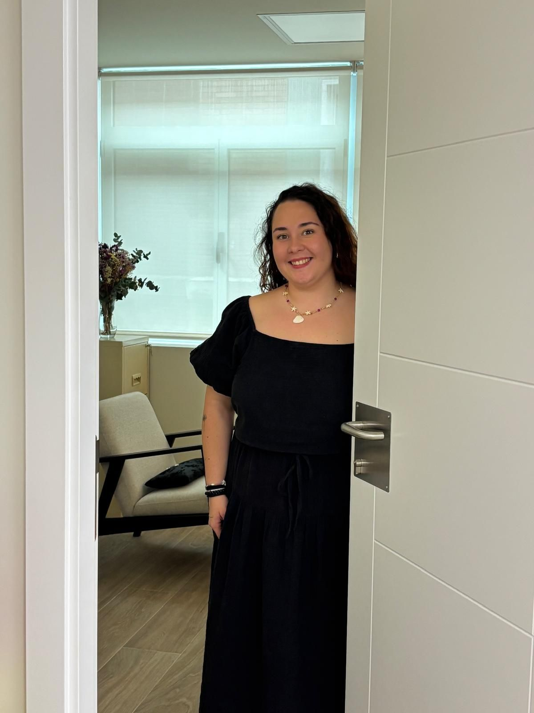
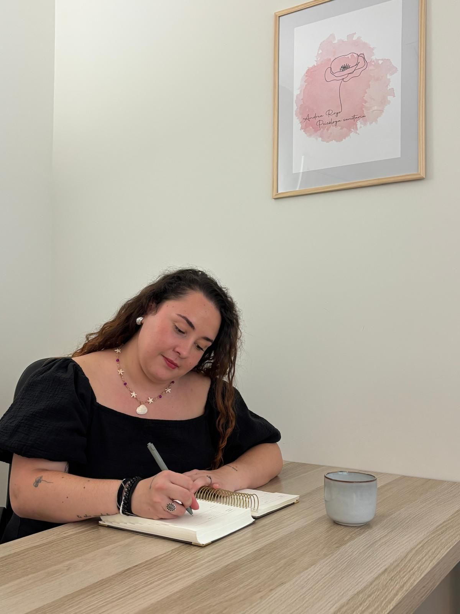
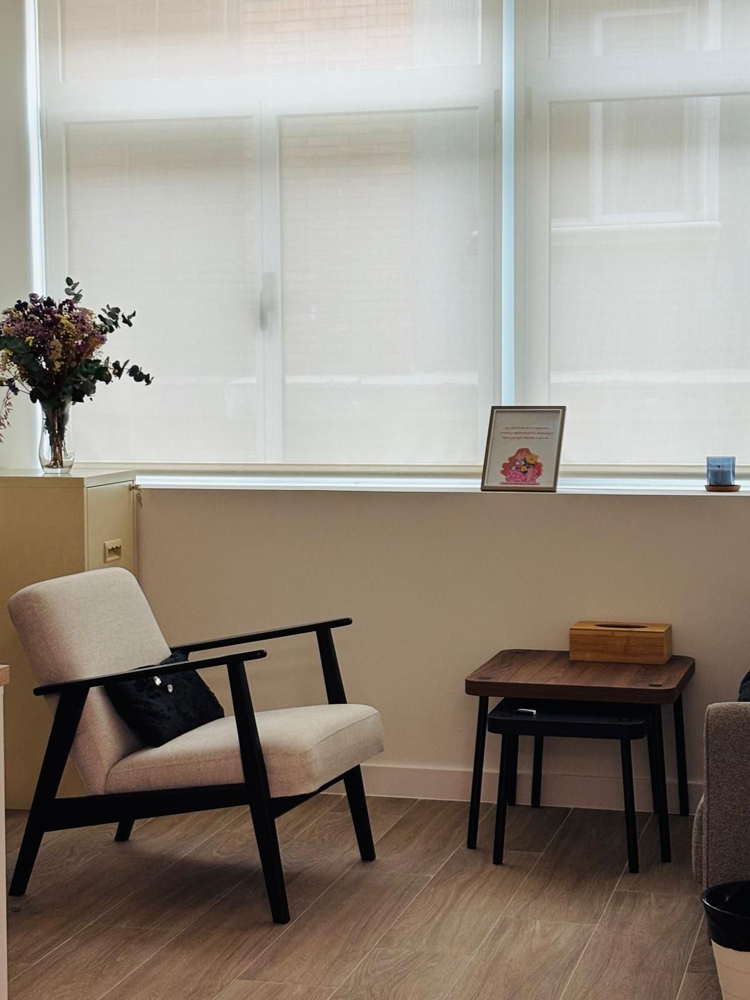

Terapia individual
Para entender qué te pasa y cambiarlo poco a poco. Sesiones de 60 minutos en la consulta del Coso.
- Ansiedad
- Autoestima
- Dependencia emocional
- TOC
- Trauma
Andrea Royo · Psicología en Zaragoza
Terapia individual y de pareja en el Coso y online. Un espacio cálido, sin juicios y sin prisas, donde adaptamos la terapia a ti, y no al revés.

Por qué vienen
Y si no sabes ponerle nombre a lo que te pasa, también puedes venir. Cuéntanoslo
Quizá llevas tiempo dándole vueltas, te cuesta poner límites o sientes que algo se repite en tu vida. Estos son algunos de los motivos con los que más acompañamos:
Ansiedad · Autoestima · Autoexigencia · Dependencia emocional · Crisis de pareja · Sexualidad y deseo · Duelo y rupturas · Trauma · TOC · Estrés y agotamiento
Terapia en Zaragoza y online
Para entender qué te pasa y cambiarlo poco a poco. Sesiones de 60 minutos en la consulta del Coso.
Para cuando cada conversación acaba en la misma discusión, hay distancia o el deseo ha cambiado. Sesiones de 75 minutos.
El mismo acompañamiento por videollamada, estés donde estés. Ideal si tienes poco tiempo o vives fuera de Zaragoza.
Lo que suele frenar
No tienes que contarlo todo el primer día. Vamos a tu ritmo y sin juicios: aquí nada de lo que digas suena raro.
No hace falta estar muy mal para pedir ayuda. Si te preocupa o se repite, merece un espacio.
Puedes hacer las sesiones online y combinarlas con las presenciales cuando te venga mejor.
En la llamada gratuita vemos quién del equipo encaja mejor contigo. Y si no somos la opción adecuada, te lo diremos.

Quién te acompaña
Psicóloga General Sanitaria, terapeuta de pareja y sexóloga.
Trabajo desde un enfoque integrador: no aplico un modelo rígido, adapto las herramientas a cada persona. Me importa que entiendas qué mantiene tu malestar —los patrones que se repiten, cómo te relacionas, cómo te tratas— para construir cambios que se queden.
Pasito a pasito.
Cómo empezamos
15 minutos por teléfono para resolver tus dudas.
Nos cuentas qué te pasa y qué te gustaría cambiar. Sin prisa y sin guion.
Herramientas adaptadas a ti y a tu historia.
Revisamos juntas cómo te sientes y ajustamos el proceso.

Una llamada de 15 minutos, gratis y sin compromiso. Nos cuentas qué te pasa y te decimos cómo podemos ayudarte.
El equipo
Si tu caso encaja mejor con otra compañera, te lo diremos en la llamada. Todas somos psicólogas generales sanitarias.
Opiniones
«Fue mi primera vez en el psicólogo y ha sido una experiencia positiva que me hizo sentir apoyada y escuchada. La profesionalidad y empatía me hicieron sentir un ambiente cálido y seguro.»Terapia individual · opinión verificada en Doctoralia
«Andrea es una excelente psicóloga y persona. Es empática, cercana y las sesiones son reconfortantes.»Terapia individual · opinión verificada en Doctoralia
«La consulta ha sido por videollamada pero se ha sentido como en persona.»Terapia online · opinión verificada en Doctoralia
«Se le ve muy profesional, se preocupa realmente por tu caso y por poder ayudarte.»Terapia individual · opinión verificada en Doctoralia
«Te hace sentir a gusto y cómodo en todo momento. Me siento bien en cada cita.»Terapia individual · opinión verificada en Doctoralia
Tarifas
15 minutos por teléfono para conocernos.
60 minutos, presencial u online.
65 € por sesión. Ahorras 20 €.
75 minutos, presencial u online.
¿Atraviesas una situación económica difícil? Pregúntanos por la tarifa reducida.
Preguntas frecuentes
No hace falta «estar muy mal». Si algo te preocupa, te duele, se repite o sientes que no consigues gestionarlo sola o solo, es buen momento para pedir ayuda.
Las sesiones individuales duran 60 minutos y las de pareja, unos 75. Al principio solemos vernos cada semana o cada dos.
Depende de lo que te trae y de tus objetivos. En la primera sesión te damos una orientación realista y lo revisamos juntas cada cierto tiempo.
Sí, si tienes un espacio privado y tranquilo. Usamos el mismo enfoque que en consulta y puedes combinar sesiones presenciales y online.
Sí. Está protegido por el secreto profesional, con las únicas excepciones que marca la ley ante un riesgo grave para ti o para otras personas.
Llámanos. En 15 minutos gratuitos resolvemos dudas y te orientamos sobre qué psicóloga del equipo encaja mejor contigo.
Pide cita
Déjanos tu teléfono y te llamamos para una conversación gratuita de 15 minutos.
Sin compromiso. Si no somos la opción adecuada para ti, te orientamos hacia otra profesional.
¿Prefieres llamar tú?
Buscar apoyo no es una señal de debilidad. Es un paso hacia cuidarte.